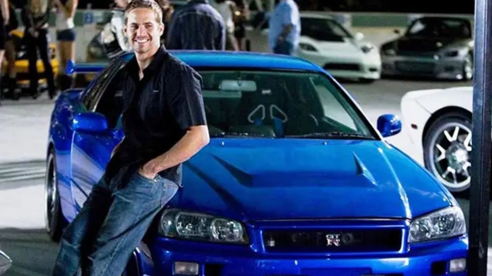

¿Porque es tan iconico el nissan skyline?
Por más críticas que reciba, es un hecho que la saga de Rápidos y Furiosos
ha logrado lo que ninguna otra historia en la pantalla grande. Desde su debut en 2001,
esta serie de películas de acción sobre carreras callejeras y persecuciones acumula 11
títulos si se suma el que se está filmando en la actualidad.
Al tener a los autos como estrellas de cada una de las películas, ciertos ejemplares que
han hecho su aparición se han vuelto sumamente famosos y valiosos. Incluso algunos de los
vehículos que han aparecido en Rápidos y Furiosos han alcanzado precios récord.
En su mayoría los autos más codiciados y con un valor superior son los que están asociados a quien
fuera la principal estrella de esta saga: Paul Walker, quien falleció en 2013 en un accidente.
Uno de los autos más populares de Rápidos y Furiosos que fue propiedad de Brian O’Conner, el personaje
que interpretaba Paul Walker, es el Nissan Skyline R34 GT-R 2000 que hizo su aparición en Rápidos y Furiosos 4 (2009).
¿Qué más tiene de especial?
Más allá de aparecer en la película, este auto es sumamente
codiciado por ser uno de los mejores automóviles japoneses de
todos los tiempos y, sin duda, se ha ganado el título de clásico
moderno, tanto por su aspecto como por su rendimiento. Entre sus
diversos atributos está el diseño que lo distingue de sus rivales
de entonces (y posiblemente todavía) como el Honda NSX,
Toyota Supra y Mazda RX-7, y se considera un auto atemporal.
¿Un auto ilegal?
Después de la película, este auto fue todo un icono por no habersefabricado para el consumo estadounidense, de hecho, no podía importarse
hasta que cumpliera 25 años. Sin embargo, una empresa buscó importar
algunos autos después de trabajar con la NHTSA y la EPA para garantizar
que los autos cumplieran con los estándares regulatorios. Lamentablemente,
esto solo quedó en un intento.